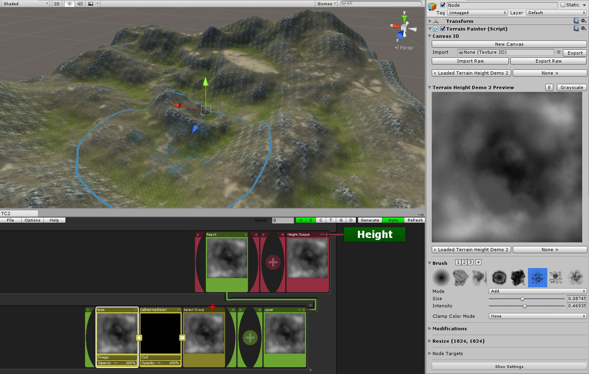
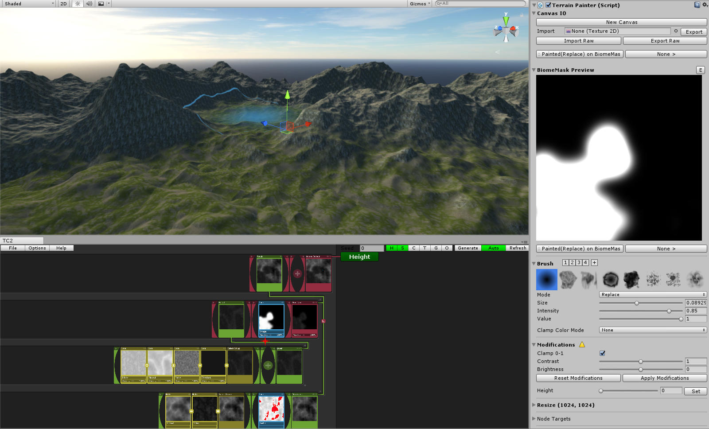

Terrain Painter
Have you ever wanted more control over your procedurally generated terrains in TC2? Then this extension is for you!
This is an extension for Terrain Composer 2, a terrain generation tool developed by Nathaniel Doldersum, and only works with it!
What is TC2 Painter?
TC2 Painter allows you to paint TC2 nodes directly in the editor, greatly improving your terrain creation workflow, both procedual and painted.It helps procedural terrain creators wanting more control over their terrain aswell as terrain painters laying out there terrain manually by offering more options on what to paint. Using this tool you can paint everything, from simple heights and splats over stone fields and forests to whole biomes with little setup required thanks to TC2's simple node editor interface.
How TC2 Painter will improve your procedural terrain generation workflow:
- No need to switch between image editor and TC2 anymore
- You don't have to rely on noise to get your positioning right
- Extend your normal brush capabilities to conditional painting
- Save/Load any image and edit it with an advanced toolset right inside Unity
Prefer manual painting over procedural generation? This is why TC2 Painter is still perfect for you:
- You can paint your terrains as you used to, but add additional conditions to your strokes
- You can not only paint height, splats and objects, but anything from stone fields over forests to whole biomes
- Works with multiple terrains out-of-the-box
Why TC2?
- TC2 is as flexible as terrain generation could possibly get
- By utilizing the power of your GPU it is really fast
- The node-based structure allows for an easy setup
- It is a 'Blending Powerhouse', allowing you to paint anything through it's mask
Features
- Works with any TC2 node (e.g. mask) in every output
- Up to 32Bit grayscale and 2k resolution
- Multiple terrain tiles and any node transformation supported!
- Paint both on the terrain in the scene view and in the GUI preview
- 9 Painting modes including smoothen/contrast
- Shortcuts for adjusting the brush while painting
- Brush presets
- Extendable brush database with high quality 512x512 brushes and functions
- Seperate undo system for the canvas
- Realtime modifications and tools
- Raw/Image import and export
- Works at runtime with TC2
- Lots of settings to customize
Upcoming features:
- Multiple outputs for multiple layers (e.g. splat painting)
- Improved generation performance through closer interaction between TC2 and Painter extension
What else to know about TC2 Painter:
- It is a script component for your Nodes, but can be added to any GameObject in the scene, specifying one or multiple node targets seperately
- It is fully GPU powered, using standard shaders, theoretically making it possible to be run on every device when decoupled from TC2
- It has an extendable brush database and many high quality 512 brushes included from asileFX
- Includes a Gaussian-function brush with adjustable falloff
- Includes full clean C# and shader source code!
Showcase
Want to see TC2 Painter in action? Watch this first demo video:Here are some examples made with the presets of TC2:

Terrain Height Painting with auto-splatmapping

Painting biomes by assigning canvas to height, splat, etc. masks